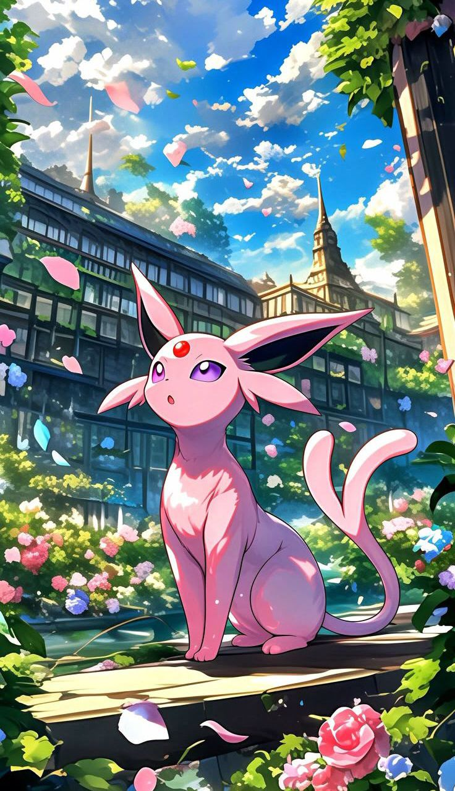
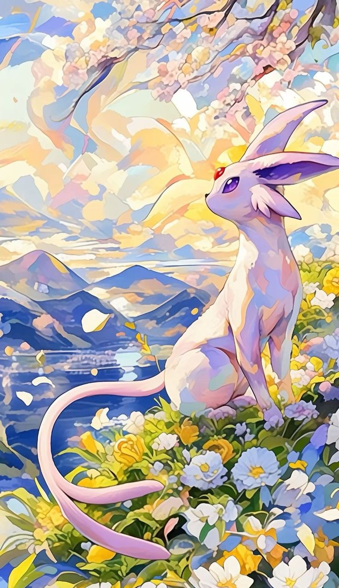
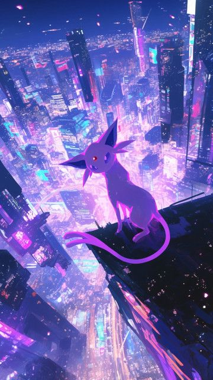
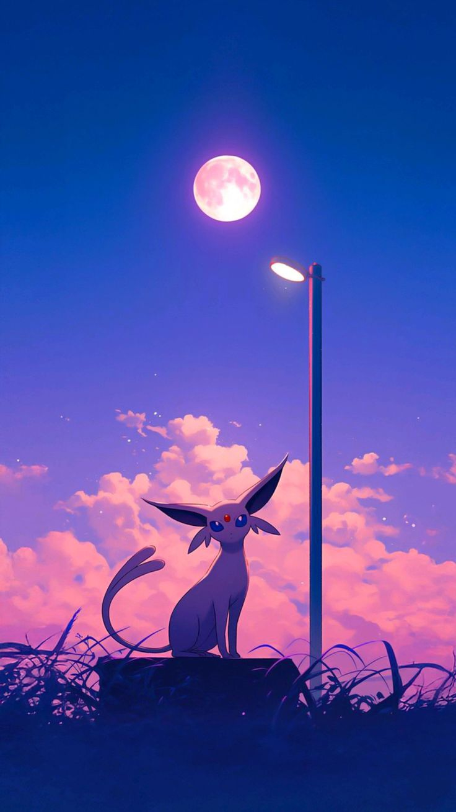

About Espeon
Espeon is a graceful Psychic-type Pokémon introduced in Generation II. Known for its deep loyalty and mystical aura, Espeon uses the fine hairs on its body to sense air currents and predict its opponent’s moves. It evolves from Eevee when leveled up with high friendship during the day. Its split tail and glowing gem are signature psychic traits.
Psychic Abilities
Espeon’s precognitive abilities and psychic strength make it an extraordinary battle partner. With moves like Psychic, Future Sight, and Morning Sun, it outsmarts opponents rather than overpowering them. It also creates psychic barriers to protect allies.
Stats
| HP | 65 |
|---|---|
| Attack | 65 |
| Defense | 60 |
| Special Attack | 130 |
| Special Defense | 95 |
| Speed | 110 |
Fun Facts
- It made its anime debut in the Johto Journeys series.
- Espeon is popular among trainers who value loyalty and intellect.
- Its cry in the games sounds like a soft ringing bell, fitting its mystical presence.
- In the Pokédex, Espeon is classified as the “Sun Pokémon.”
- Its sleek body and feline features give it an elegant appearance among Eeveelutions.
- It appears in various spin-off games like Pokémon GO, Pokémon Mystery Dungeon, and Pokkén Tournament.
Gallery



